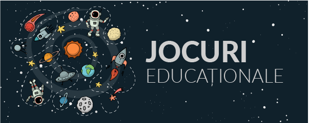
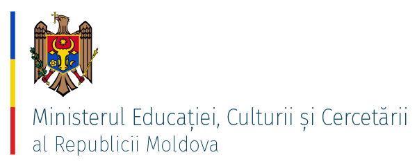
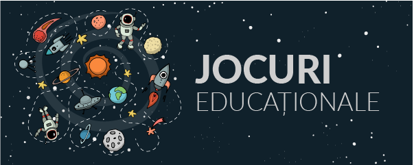
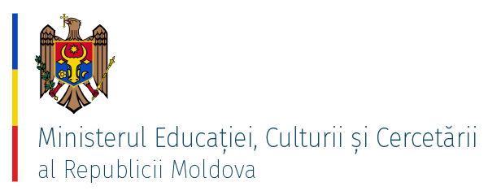

Obiective:
General: Instruirea şi educarea copiilor cu vîrsta între 6 şi 18 ani (ceea ce ar corespunde
următoarelor cicluri: dezvoltare, observare şi orientare, aprofundare, specializare) în
conformitate cu cerinţele idealului educaţional.
Specifice: Cadru didactic instruieşte şi educă prin tipuri de activitate specifice, urmărind obiectivele cognitive, de limbaj, psihomotorii, afective, estetice, ale educaţiei pentru
societate, astfel încît elevii să devină indivizi adaptabili, flexibili, cu dorinţa şi abilitatea de a
continua să înveţe şi după terminarea studiilor, pe tot parcursul vieţii, toleranţi faţă de opinii diferite.
Cadru didactic permite fiecărui elev să-şi urmeze drumul personal de evoluţie, oferindu-i
modelul de comportament civilizat, etic, de limbaj şi echilibru emoţional şi prin exemplul
preocupării pentru dezvoltare şi menţinere la curent cu cercetarea pedagogică
contemporană în general şi în domeniul său, în special.
Organizarea activităţilor de învăţare
Creeaza condiţii optime în vederea receptării cunoştinţelor (material vizual relevant in cantitate suficienta). Există
excesul de detalii, transmiterea cunoştinţelor facîndu-se gradat, într-o succesiune logică.
Capacitatea de organizare a procesului de instruire în forme şi prin situaţii de învăţare adecvate tipului de deprinderi
şi competenţe care trebuie formate.
Selectarea situaţiilor de învăţare care să stimuleze gîndirea elevului, să-i formeze deprinderile şi competenţele de
muncă şi studiu necesare instruirii pe durata intregii vieţi.
Organizarea activităţii de dezvoltare fizică a elevilor
Organizarea spaţiului destinat activităţii de educaţie fizică, astfel încît să se asigure desfăşurarea controlată a
acesteia, în condiţii de securitate.
Menţinerea aparatului sportiv, a sălii de sport, a terenului de sport în stare de funcţionare pentru a putea fi utilizat
corespunzător nevoilor de pregătire fizică a elevilor.
Corelarea gradului de dificultate şi complexitate a exercitiilor fizice cu vîrsta şi condiţia fizică a elevilor, în
vederea dezvoltării armonioase şi recreării elevilor.
Consecvenţa în urmărirea respectării regulilor de igienă şi întăririi deprinderilor de igiena ale elevilor. Tact in
abordarea eventualelor situatii de nerespectare a normelor de igiena.
Utilizarea materialelor didactice
Analiza situaţiilor de învatare şi identificarea necesarului de material didactic.
Corelarea materialelor didactice complementare cu conţinuturile de învăţare, astfel încît acestea să constituie un
suport în procesul instructiv-educativ.
Facilitatea învăţării prin alegerea cu discernamînt a materialelor didactice, adaptate cu situaţiile concrete din
clasa în vederea asigurării unei instruiri eficiente.
Evaluarea cunostintelor elevilor
Asigurarea conditiilor materiale necesare aplicarii instrumentelor de evaluare, în vederea obtinerii unei evaluari
obiective si unitare a tuturor elevilor.
Consecventa în administrarea probelor de evaluare.
Valorificarea, dupa caz, a rezultatelor elevilor în scopul diagnozei sau selectiei elevilor.
Stabilirea strategiilor didactice adecvate în scopul remedierii deficientelor procesului educational, în functie de
rezultatele înregistrate la evaluare

 


